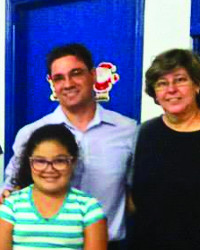

Família e Escola Juntos, Formando uma Rede de Proteção ao Aluno
O núcleo familiar é um eixo central na formação da identidade e na trajetória de vida das pessoas. Algumas vezes, porém, as famílias não conseguem dar conta dos problemas sociais que afetam suas relações, como a violência, as longas jornadas de trabalho e a falta de orientação sobre os cuidados com os filhos.
Diversas experiências demonstram que a aproximação entre a família e a escola, criando um ambiente de colaboração mútua, pode melhorar de maneira expressiva o desempenho escolar dos alunos e favorecer a vida em comunidade.
Vamos juntos ajudar a formar uma rede de proteção em torno de nossas crianças?
Dia da Família na Escola
A ideia é organizar um final de semana com atividades a serem realizadas pelos alunos e profissionais da escola junto com seus familiares. O que a ação pode gerar:
- Maior integração da comunidade escolar;
- Fortalecer a ideia de que, na vida em comunidade, somos uma grande família. Ao nos reconhecermos como tal, ganha relevância o cuidado com o coletivo.
 O Lucas Neves, de Orlândia (SP), reuniu alunos e familiares em uma palestra sobre drogas e exposição de trabalhos dos alunos sobre o tema.
Saiba Mais